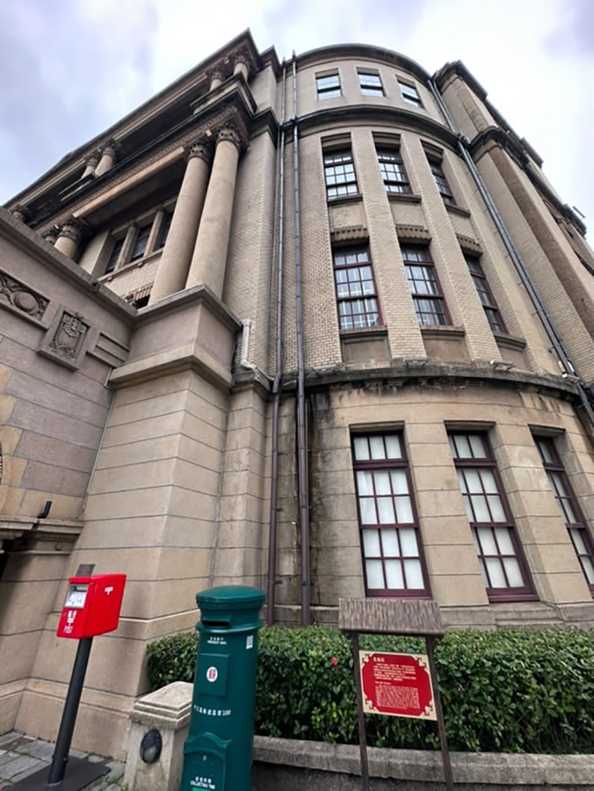

郵政博物館


郵政博物館臺北館位於臺北市中正區重慶南路二段 45 號，鄰近臺灣總統府，為一座具有 歷史價值的建築。
郵政博物館臺北館創建於 1965 年，主要功能是展示臺灣郵政發展歷史與相關文物。館內 收藏郵票、郵政用品、通信設備等珍貴資料，並設有互動展示區，讓民眾了解郵政系統的演 變。
建築形式採用現代主義建築風格，結構簡潔而穩固。 外觀以水泥與磁磚為主要建材，展現 20 世紀中葉的建築特色。 建築高度為地上七層，地下兩層，提供充足的展覽與儲存空間。
郵政博物館臺北館是一座兼具教育與文化價值的建築，透過不同樓層的展覽與互動區，讓 民眾深入了解臺灣郵政的歷史與發展。
直到後來深入了解，我才知道原來豎立在北門旁邊的建築原來是個博物館，雖然建築外觀 樸實，沒有華麗的雕飾，但建築線條簡單、功能明確，避免過多裝飾，府和現代主義的「形 式追隨功能」(Form Follows Function) 理念，反映了 1960 年代台灣公共建築的發展趨勢。